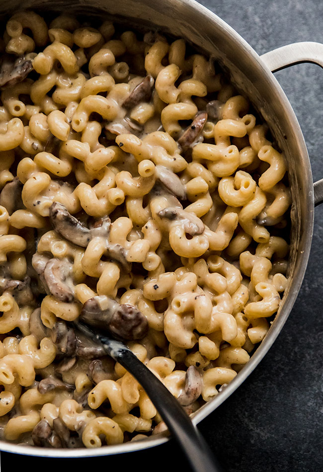

Mushroom Garlic Mac n Cheese

Ingredients
- 3/4 pound pasta
- 4 tablespoons unsalted butter
- 4 cloves garlic, minced
- 16 oz portobello mushrooms, sliced
- salt and pepper to taste
- 2 tablespoons flour
- 2 cups milk
- 1 1/2 cups gruyere cheese, shredded
- 2 ounces goat cheese
- Cook pasta
- Melt half the butter in a saucepan
- Add garlic and mushrooms to butter and saute for 8 minutes
- Add salt and pepper
- Add remaining butter and stir until melted
- Add flour to saucepan, stir, and cook for a minute
- Add milk a little t a time, continuosly stirring until all milk is incorporated
- Cook stirring continuously for 5-8 minutes until the mixture simmers
- Remove sauce from heat
- Add gruyere and goat cheese. Stir until cheese melts
- Add cooked pasta to sauce and toss to combine